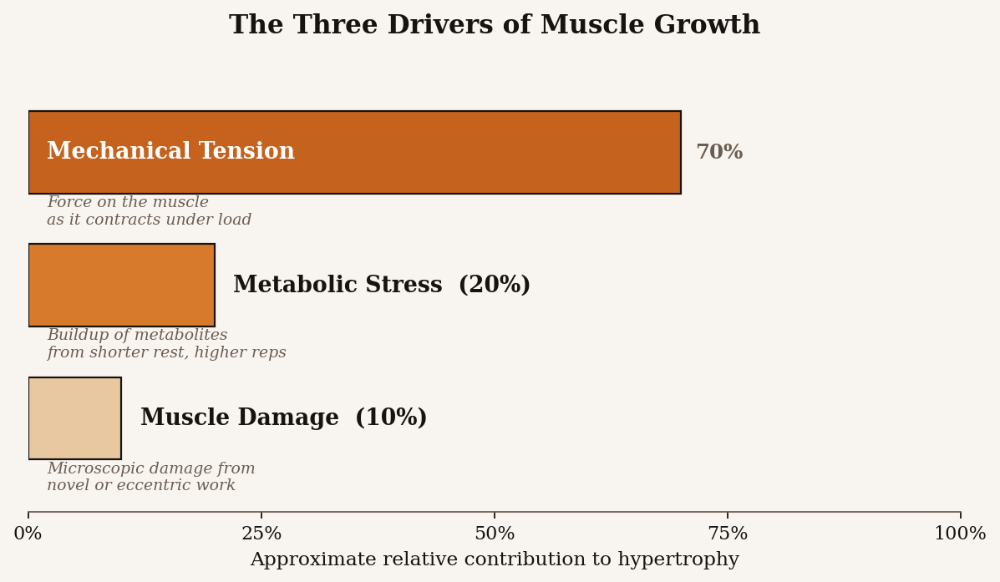
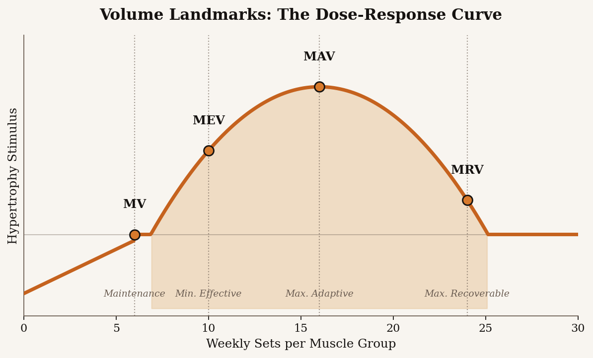

Three things drive muscle growth, and progressive overload is how you keep them coming. Once you understand the dose-response curve and where your training volume sits inside it, the rest of programming becomes a math problem instead of guesswork.
The Three Drivers of Hypertrophy
Decades of research point to three mechanisms that signal a muscle to grow: mechanical tension, metabolic stress, and muscle damage. Of the three, mechanical tension is by far the most important. Metabolic stress and muscle damage are real factors but mostly downstream of training hard with appropriate loads.

The three drivers of hypertrophy at a glance. Mechanical tension does most of the work; metabolic stress and muscle damage are supporting factors.
Mechanical Tension
Force placed on a muscle as it lengthens and shortens against load. This is the primary signal for growth. High-effort sets in moderate-to-heavy rep ranges (about 5 to 30 reps) all produce growth as long as the working sets are taken close to failure.
Metabolic Stress
The buildup of metabolites during higher-rep, shorter-rest sets. The "pump" feeling. Useful as a secondary driver and a way to get more total work done, but it does not replace heavy mechanical loading.
Muscle Damage
Microscopic damage to the muscle fibers from training, especially novel or eccentric-heavy work. A small amount accelerates adaptation. Excessive damage just delays recovery without adding more growth.
Progressive Overload, Demystified
Progressive overload is the idea that to keep growing, you have to keep giving the muscle a reason to. In practice, that means doing slightly more over time. More weight on the bar is the obvious lever, but it is not the only one. You can also progress by adding a rep at the same weight, adding a set, improving exercise execution, or shortening rest periods.
The trap most lifters fall into is treating progressive overload as "add weight every session forever." That works for a few months, then it breaks. Once you are past beginner gains, progress comes in waves: harder weeks, easier weeks, deload, repeat. The job is not to add weight every workout. The job is to make this month harder than last month, on average.
Volume Landmarks: The Idea Most Lifters Miss
Training volume, usually counted in hard sets per muscle per week, follows a dose-response curve. Too little, and you do not stimulate growth. Too much, and recovery breaks down before the next session. The useful range sits between two landmarks researchers and coaches call MEV and MRV.

The dose-response curve. Below MV the muscle starts losing mass; between MEV and MRV is the productive zone, with MAV in the middle representing the volume range where growth is fastest.
MV (Maintenance Volume) — the minimum number of sets per week needed to keep the muscle you have. Useful during a fat-loss phase or a busy life chapter.
MEV (Minimum Effective Volume) — the lowest weekly volume that still produces measurable growth. A reasonable starting point at the beginning of a training block.
MAV (Maximum Adaptive Volume) — the range where growth is happening fastest. Most of your training time should sit here.
MRV (Maximum Recoverable Volume) — the most weekly volume you can recover from. Touch this briefly at the end of a block, then deload.
The practical pattern is to start a training block near MEV and add a set or two per muscle per week as you progress, working toward MRV across four to six weeks before deloading and restarting. Most natural lifters land somewhere in the 10 to 20 sets per muscle per week range during productive training, with individual variation in either direction.
Why This Matters
If you understand these three ideas — the drivers of growth, how progressive overload actually works, and where your volume should sit on the dose-response curve — you can evaluate any program, influencer, or piece of fitness advice on the internet on its merits. That is the whole point of this site. The goal is not to give you a program. The goal is to give you the framework to choose programs intelligently for the rest of your training life.
Once these principles click, head over to Exercise Selection to see how to pick the movements that put them into practice.